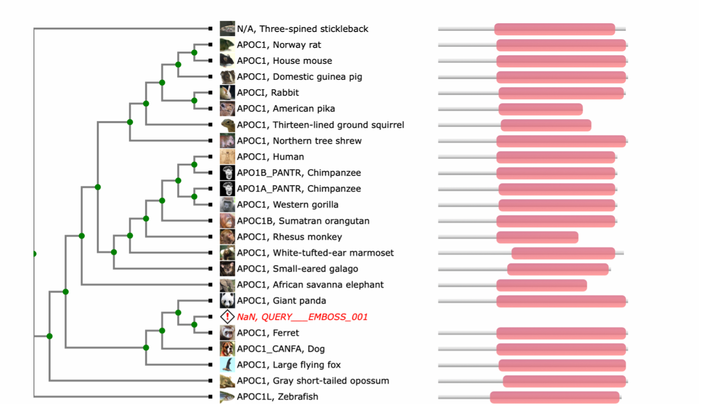

TreeFam - podatkovna zbirka dreves živalskih genov#
Avtorja: Špela Sotlar, Jan Trebušak
Datum predstavitve: 2022_05_11
Namen vaje#
Namen vaje je spoznavanje programa TreeFam. To je zbirka genetskih dreves živalskih genomov, uporabljamo pa jo za identifikacijo ortolognih in paralogni genov ter opazovanje poteka evolucije le-teh.
Program#
Program: TreeFam - database of animal gene trees, Release 9
Avtorji programa: Fabian Schreiber, Mateus Patricio, Matthieu Muffato, Miguel Pignatelli, Alex Bateman, vsi delujejo na Sanger Institute (https://www.sanger.ac.uk)
Reference:
Schreiber F, Patricio M, Muffato M, Pignatelli M, Bateman A. TreeFam v9: a new website, more species and orthology-on-the-fly. Nucleic Acids Res. 2014 Jan;42(Database issue):D922-5. doi: 10.1093/nar/gkt1055. Epub 2013 Nov 4. PMID: 24194607; PMCID: PMC3965059
Opis programa#
TreeFam je podatkovna zbirka filogenetskih dreves iz živalskih genomov. Zajema 109 vrst in 15736 družin s približno 2,2 milijona zaporedji. Določene baze podatkov napovejo ortologijo/paralogijo glede na filogenetska drevesa, ki so bila skonstruirana z poravnavo homolognih zaporedij – med nje spada tudi TreeFam. Program naredi poravnano zaporedja in ga vmesti v ustrezno družino z uporabo MAFFT (multiple sequence alignment program) nato pa ga doda v ustrezno genetsko drevo z uporabo družine, kot reference za RAxML-EPA algoritem. Prednost filogenetskih dreves pred grafičnimi prikazi je v tem, da si drevesa lažje predstavljamo in so bolj informativna, saj lahko določimo kdaj se je določen gen podvojil/izgubil. TreeFam uporablja Ensembl Compara pipeline, z izjemo definicije genetskih družin. TreeFam uporabi HMM pristop, kar zagotavlja stabilnost družin. Za vsako genetsko družino je poravnava narejena z MCoffee (družine z manj kot 200 člani) oziroma MAFFT. Za vsako družino zgardijo genetsko drevo z uporabo TreeBesta. Ta zgradi pet genetskih dreves glede na aminokislinsko zaporedje. Pet dreves je nato združenih v eno. Prednost uporabe AK zaporedja in kodonskega zaporedja je v tem, da drevesa, ki temeljijo na kodonskem zaporedju razrešijo bližnja sorodstva, glede na AK pa daljna. To skupno drevo je nakoncu združeno s taksonomskim drevesom NCBI z uporabo ‘Duplication/Loss Interference’ algoritma.

Vhodni podatki#
Aminokislinsko zaporedje iskanega proteina v FASTA formatu.
Navodila#
Vhodni podatki#
aminokislinsko zaporedje apolipoproteina P1 iz morske vidre UniProt iD: P0DPG9
aminokislinsko zaporedje za kljunašev receptor za hepatocitni rastni faktor UniPROT ID: Q07E01
aminokislinsko zaporedje za človeški citokrom P450 UniProt ID: P10632
Postopek dela#
Odpremo program TreeFam
V okno vnesemo AK zaporedje v formatu FASTA ali ID kodo
Za večino primerov je dovolj, da izberemo parsinomy, če pa ne dobimo željenih rezultatov/jih je preveč uporabimo maximum likelihood (v nekaterih primerih dobimo enake rezultate)
Obkljukamo ‘insert into tree’
Zaženemo search in počakamo, da nam program izriše drevo
Pričakovani rezultati in razlaga#
Primera, ko program deluje: Za apolipoprotein morske vidre je rezultat relativno dober. Umesti ga med sesalce, natančneje med zveri, kar je ustrezen rezultat glede na omejitve programa (samo 109 vrst in morska vidra ni ena izmed njih).

Drugi primer je receptor za hepatocitni rastni faktor iz kljunaša. Tukaj je program prišel do pravilnega zaključka.

Primer, ko program ne deluje: Človeški citokrom P450 spada med gene sirote (orphan gene), kar pomeni da nima homologov zunaj posamezne vrste. Program zato ne najde nobenega zadetka. Prav tako program ne deluje, če vnesemo zapredje organizmov, ki niso evkarionti.